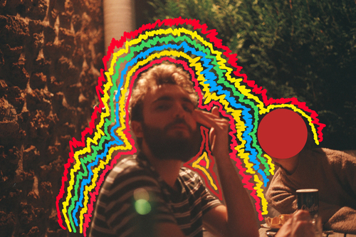
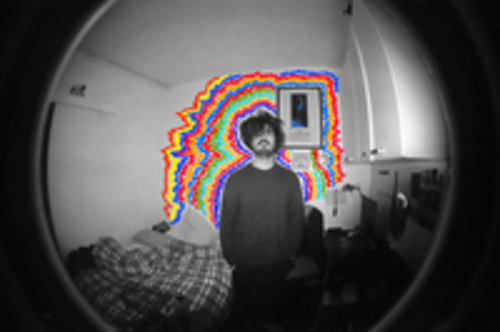
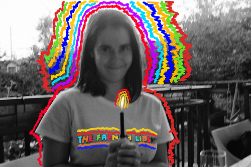
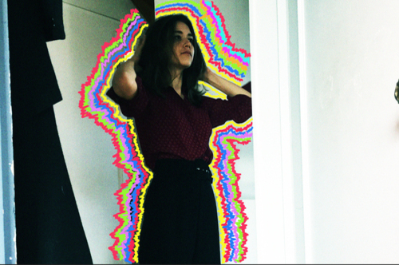
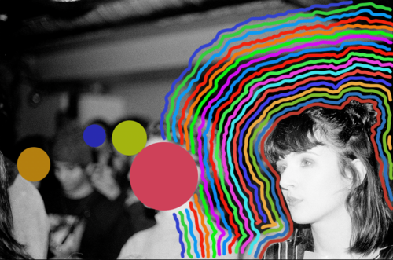
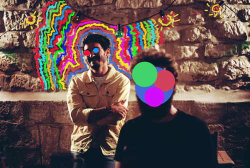

Dante ⚡
De longues études de cinéma, des centaines d’heures d’ennui devant un bureau, et des centaines d’heures à laisser tourner les vinyles du Velvet Underground. Dante est celui qui a réuni toute l’équipe de TONNERRE ! avec une envie de créer et le reste, on s’en fout. C’est grâce à lui qu’on s’est lancés tous ensemble, et il nous abreuve d’articles construits, de motivation et de petits gâteaux apéro.

Léo ⚡
Des centaines de salles de montage, des kilomètres de pellicule argentiques et des centaines d'accords de guitare pour s'aider à s'endormir. C'est difficile de décrire Léo tant il fait plein de choses différentes. Lui et sa chevelure soyeuse bougent toujours frénétiquement dans tous les sens pour créer et s'investir dans des milliards de projets. Léo s'occupe d'une très grosse part de la mise en page de TONNERRE !, de nombreux visuels, d'articles à venir et de la rubrique dédiée à la photographie.
Lounis ⚡
Des centaines d’heures à siffler du Georges Brassens et du Idir, un accent anglais bien meilleur que celui de Lord Farquad et une moustache plus stylée que celle d’Asterix. Lounis aime écrire des poèmes (dont les premières lettres de chaque vers forment des phrases lubriques), mais également des fictions crasseuses pleines de violence et de stupre. Il va bientôt vous régaler avec son histoire de détective privé déjà cancel, et ses poèmes pleins de sensibilité.

Romane ⚡
Des centaines d’heures passées à étudier les Grandes Horizontales du Second Empire, le diktat de la pilosité, la peinture, les finnois de Laponie et Eddie Mitchell. Autrice d’un incroyable mémoire sur la pilosité féminine au XIXe siècle, Romane est également passionnée par le dessin, le risotto et Eddie Mitchell. Vous pourrez lire un article tiré des conclusions du-dit mémoire dans le premier numéro de TONNERRE ! (mais sans Eddie Mitchell).

Lise ⚡
Des centaines d’heures à faire son pain et confectionner des éponges avec ses vieilles chaussettes, des études de scénariste et des heures et des heures à s’arracher les cheveux devant les méfaits du patriarcat. Lise aime écrire, dessiner (des choses obscènes), rire, danser, virevolter, tomber, se relever, recommencer. Jadis (quand ça existait) amatrice de gros concerts de rock, elle erre désormais dans les rues de Villeurbanne avec son bombers sur le dos, à la recherche de son fix de fun. Elle vous propose dans le numéro de juin la première partie d’une histoire qui lui tient à coeur depuis longtemps, mettant en scène notamment la Vierge et du karaoké.

Louise ⚡
Toute la discographie d’Elton John en vinyles, le cheveu changeant comme les saisons, et un amour infini des chats et des drag queens. En école d’illustration, Louise est passionnée par le dessin. Une passion qu’elle met à contribution pour offrir à « TONNERRE ! » son esthétique post punk et grunge. Illustratrice de la couverture, community manager en or, c'est elle qui a conçu l’esthétique de ce fanzine. Vos mirettes vont prendre un gros coup de qualité dans la rétine à la vue de son oeuvreeeee.

César ⚡
Un acrobate impressionnant, un chanteur cristallin, un danseur virtuose, un acteur émouvant et une paire de lunettes sans pareille, comment résumer César en peu de mots ? Non content de se vouer aux arts de la scène, il donne des cours de français aux migrants en situation irrégulière depuis plusieurs années. Il va traiter dans les prochains numéros de ce sujet terriblement actuel, avec une série d’articles foutrement bien ficelée.